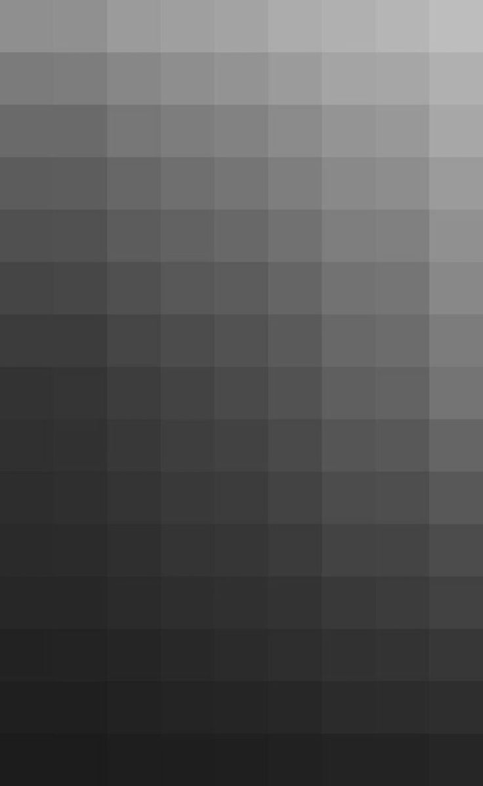

Відтінки сірого
- Майже білий сірий
- Світло-сірий
- Пиловий сірий
- Сріблястий сірий
- Перлинно-сірий
- Мармуровий сірий
- Каменистий сірий
- Графітовий сірий
- Платиновий сірий
- Попелястий сірий
- Середньо-сірий
- Цементний сірий
- Сталевий сірий
- Хмарний сірий
- Глиняний сірий
- Бетонний сірий
- Сланцевий сірий
- Синьо-сірий
- Тепло-сірий
- Холодний сірий
- Олов'яний сірий
- Мокрий асфальт
- Димчастий сірий
- Глинистий сірий
- Шиферний сірий
- Пергаментний сірий
- Сіро-бежевий (грейдж)
- Туманний сірий
- Мишачий сірий
- Базальтовий сірий
- Антрацитовий сірий
- Лавандовий сірий
- Річковий сірий
- Дощовий сірий
- Сірий металік
- Льодовиковий сірий
- Олов’яний сірий
- Фарфорний сірий
- Кварцовий сірий
- Цинковий сірий
- Пір'яний сірий
- Мушлястий сірий
- Світло-синьо-сірий
- Світло-зелений сірий
- Гранатовий сірий
- Морозний сірий
- Західно-сірий
- Тютюновий сірий
- Майже чорний сірий
Сірий
Сірий колір – це один із найбільш універсальних і багатогранних відтінків у палітрі кольорів. Він не настільки яскравий або насичений, як червоний чи синій, проте його нейтральність робить його незамінним у різних сферах життя. Сірий вміщує в собі баланс між чорним і білим, а отже, є символом рівноваги, нейтральності й спокою. Він може бути як теплим, так і холодним, підлаштовуючись під настрій, контекст або настрій глядача.
У природі сірий колір оточує нас повсюдно. Його можна побачити в кольорі хмар у похмурий день, на скелях, у тіні дерев чи на туманних світанках. Саме тому сірий часто асоціюється з дощем, тишею та задумливістю. Цей колір позбавлений емоційної зарядженості, яку мають інші кольори, тому він може створювати відчуття спокою та стабільності. У природі сірий здебільшого сприймається як щось буденне, однак ця простота надає йому глибину, роблячи його надзвичайно гнучким у відображенні складних емоцій.
У психології сірий колір часто асоціюється з нейтралітетом та збалансованістю. Він не викликає сильних емоційних реакцій, що робить його ідеальним для створення спокійного і розслабленого середовища. Сірий часто використовують у дизайні інтер'єрів для офісів або приміщень, де потрібна концентрація та продуктивність. На відміну від яскравих і кричущих кольорів, сірий не відволікає і не перенавантажує увагу, а допомагає зосередитися на головному.
Сірий також символізує зрілість, досвід і мудрість. Цей колір нерідко сприймається як ознака серйозності та професіоналізму. Саме тому багато бізнесових костюмів або офіційних одягів мають відтінки сірого. У світі моди сірий колір вважається універсальним, оскільки його легко поєднати з іншими кольорами. Він не затьмарює, а навпаки, допомагає підкреслити інші деталі, створюючи гармонійний образ.
Культурно сірий колір має різні значення. В одних культурах він може бути символом скорботи або невизначеності, в інших – знаком мудрості та стриманості. У західних культурах сірий часто пов'язують із дощовою погодою або зимовими місяцями, коли природа занурюється в тихий стан очікування. У східних культурах сірий може символізувати гармонію і баланс між інь та янь, що відображає його універсальну природу.
Проте, сірий має і свої негативні конотації. Він може викликати почуття одноманітності та байдужості. У деяких контекстах його асоціюють із відсутністю емоцій, депресією або навіть пригніченістю. Однак це радше питання інтерпретації, оскільки багато залежить від того, який відтінок сірого використовується і в якому контексті. Світліші відтінки можуть виглядати свіжими й заспокійливими, тоді як темніші створюють атмосферу серйозності або навіть містичності.
У мистецтві сірий колір також відіграє важливу роль. Художники використовують його для створення складних градієнтів, тіней і переходів між світлом і темрявою. Він допомагає передати глибину і тривимірність об'єктів, будучи важливим елементом композицій. Сірий також може служити як фон, на якому яскраві кольори виглядають більш виразно.
Загалом, сірий колір – це колір балансу і багатозначності. Він може бути як нейтральним і спокійним, так і драматичним і глибоким. Його універсальність і здатність приймати різні відтінки роблять його важливим у мистецтві, дизайні та культурі. Сірий завжди залишається актуальним, незалежно від модних тенденцій чи культурних змін, і його здатність адаптуватися під будь-який контекст робить його надзвичайно цінним і значущим.
Погладьте котика